Demonstrate the performance of Safe Guidance Mode
A similar version of this safe guidance mode is used onboard the PRISMA formation flying spacecraft, Mango and Tango.
Since version 10. ------------------------------------------------------------------------ See also SafeGuidanceSim, PlotRun3D, DeltaVChart ------------------------------------------------------------------------
Contents
%-------------------------------------------------------------------------- % Copyright (c) 2012 Princeton Satellite Systems, Inc. % All rights reserved. %-------------------------------------------------------------------------- %--- BEGIN USER INPUT ---% % LOAD SIMULATION INPUT DATA setup = SafeGuidanceSimInit('prisma noise'); setup.nSPO = 300; setup.nOrbits = 5; setup.params.minTimeBtwnIPDeltaVs=3600; setup.params.minTimeBtwnDeltaVs=300; setup.params.dTSeparation = 1500; setup.params.margin = 30; setup.params.dMin = 60; setup.noise(3:4) = [.05 .001]; % NUMBER OF SIMULATIONS N = 10; % SELECT ONE TYPE OF INITIAL CONDITIONS: %initCond = 'nominal plus error'; initCond = 'collision course'; %initCond = 'inside avoidance region'; % TO REPRODUCE SAME CONDITIONS EACH TIME, SET RANDN STATE randn('state',0); % OPTIONS FOR "NOMINAL PLUS ERROR" opts.dist = setup.params.dMin+setup.params.margin+10; opts.goals = struct('y0',0,'aE',setup.params.dMin+setup.params.margin+10,'beta',0,'zInc',opts.dist,'zLan',opts.dist); opts.posErrSize = .5; % m opts.velErrSize = 1e-3; % m/s % OPTIONS FOR "COLLISION COURSE" opts.R_init_max = 150; % maximum position boundary (m) opts.R_init_min = 75; % minimum position boundary (m) opts.T_collide = 0.5; % time of collision (orbits) % OPTIONS FOR "INSIDE AVOIDANCE REGION" opts.R_mean = 10; % mean position boundary (m) opts.velScale = 1e-3; % relative velocity scale (m/s) %--- END USER INPUT ---% n = OrbRate(setup.el0(1)); T = 2*pi/n;
Warning: Using 'state' to set RANDN's internal state causes RAND, RANDI, and RANDN to use legacy random number generators. This syntax will be removed in a future release. See <a href="matlab:helpview([docroot '\techdoc\math\math.map'],'update_random_number_generator')">Updating Your Random Number Generator Syntax</a> to use RNG to replace the old syntax.
Print out key settings
%----------------------- disp('**************************************************************') fprintf('Run SafeGuidance %d times. Initial state: %s.\n',N,initCond) fprintf('Safe distance: %3.3g m\n',setup.params.dMin) fprintf('Separation Time: %3.3g s\n',setup.params.dTSeparation) fprintf('Max Drift / Orbit: %3.3g m\n',setup.params.maxDriftPerOrbit) disp('**************************************************************') d1 = setup.params.dMin; d2 = setup.params.dMin + setup.params.margin; [xc,yc]=Circle(setup.params.dMin,0,0,500); [xc2,yc2]=Circle(setup.params.dMin+setup.params.margin,0,0,500);
************************************************************** Run SafeGuidance 10 times. Initial state: collision course. Safe distance: 60 m Separation Time: 1.5e+03 s Max Drift / Orbit: 100 m **************************************************************
RANDOM INITIAL CONDITIONS...
%----------------------------- xH0 = zeros(6,N); switch initCond case 'nominal plus error' % nominal trajectory with random phase and random noise: beta = UnwrapPhase(randn(1,N)*2*pi); % relative ellipse phase xHErr = [opts.posErrSize*randn(3,N); opts.velErrSize*randn(3,N)]; % relative state error for i=1:N opts.goals.beta = beta(i); xH0(:,i) = Goals2Hills( setup.el0, opts.goals ) + xHErr(:,i); end case 'collision course' % generate a random Hills state % - initial position is bounded to be: % + within sphere of radius R_init_max, and % + outside a sphere of R_init_min % - initial velocity is computed to provide a collision at time T_collide collTime = opts.T_collide*T; rH0 = [randn(2,N);zeros(1,N)]*mean([opts.R_init_min,opts.R_init_max]); vH0 = zeros(3,N); % initialize here, computed below dH0 = Mag(rH0); for i=1:N if( dH0(i)<opts.R_init_min ) rH0(:,i) = rH0(:,i)/dH0(i)*opts.R_init_min; elseif( dH0(i)>opts.R_init_max ) rH0(:,i) = rH0(:,i)/dH0(i)*opts.R_init_max; end vH0(:,i) = PositionDeltaV( rH0(:,i), zeros(3,1), zeros(3,1), n, collTime ); end xH0 = [rH0;vH0]; case 'inside avoidance region' % In-plane rH0 = [randn(2,N);zeros(1,N)]*opts.R_mean; vH0 = [randn(2,N);zeros(1,N)]*opts.velScale; xH0 = [rH0;vH0]; % ensure all initial positions are INSIDE region k = find( xH0(2,:).^2+4*xH0(1,:).^2 >= .999*setup.params.dMin^2 ); if( ~isempty(k) ) phase = atan2(xH0(2,k),-xH0(1,k)); xH0(2,k)=0.99*setup.params.dMin*sin(phase); xH0(1,k)=-.5*0.99*setup.params.dMin*cos(phase); end end
Initialize simulation variables
r0 = zeros(3,N); v0 = r0; mD = zeros(1,N); dV = zeros(1,N); xSet = cell(1,N); dVSet = cell(1,N); iSet = cell(1,N); minDist = 1e5; % init to large number maxDV = 0; dT = T/setup.nSPO; vxmod = []; dvtt = []; hw = waitbar(0,sprintf('Running %d simulations...',N)); iMax = [];
Run N cases of FFRelSim with random initial conditions
for i=1:N % compute initial orbital element differences setup.xH0 = xH0(:,i); setup.dEl0 = Hills2DeltaElem( setup.el0, setup.xH0*1e3 ); % run simulation d = SafeGuidanceSim( setup ); % compute min distance mD(i) = min( Mag( d.xH(1:3,:) ) ); % actual min-distance % compute total delta-v dV(i) = sum(Mag(d.aCont(:,2:end)).*diff(d.time)*T); % km/s dV(i) = sum(Mag(d.dVapp)); % km/s % store min dist case if( mD(i) < minDist ) minDist = mD(i); sMin = setup; dMin = d; xHMinUA = HillsEqns( setup.xH0, n, dMin.time*T, 1 ); iMin = i; end % store max dv case if( dV(i) > maxDV ) maxDV = dV(i); sMax = setup; dMax = d; xHMaxUA = HillsEqns( setup.xH0, n, dMax.time*T, 1 ); iMax = i; end % store initial relative position and velocity r0(:,i) = setup.xH0(1:3); v0(:,i) = setup.xH0(4:6); % store entire SLO frame trajectory and controls xSLO = d.xSLO; xSet{i} = xSLO; dVSet{i} = Hills2LVLH(d.aCont)*dT; iSet{i} = d.inside; waitbar(i/N); end close(hw);
Display / plot results
fprintf('\n**************************************************************\n') fprintf('Average Delta-V: %3.3g m/s\n',mean(dV)) fprintf('Highest Delta-V: %3.3g m/s\n',max(dV)) fprintf('Average Min-Distance: %3.3g m\n',mean(mD)) fprintf(' Lowest Min-Distance: %3.3g m\n',min(mD)) disp('**************************************************************') k = find( mD<setup.params.dMin ); [xcmin,zcmin] = Circle(opts.R_init_min,0,0,500); [xcmax,zcmax] = Circle(opts.R_init_max,0,0,500); f=[]; f(end+1) = figure('name','Initial States'); plot(r0(2,:),r0(1,:),'*'), set(gca,'fontsize',14), hold on if( strcmp(initCond,'collision course') ) plot(xcmin,zcmin,'m--',xcmax,zcmax,'m--') end plot(xc,yc/2,'k--') axis equal grid on xlabel('Along-Track [m]') ylabel('Radial [m]') %------------------------------------------ % analysis plots for minimum distance case SafeGuidanceSimPlots(dMin); %------------------------------------------ % MIN DIST CASE fName = sprintf('MIN DISTANCE Case (#%d, %4.1f m)', iMin, minDist ); f(end+1)=PlotRun3D( xSet, dVSet, iSet, iMin, d1, d2 ); set(f(end),'name',fName); %------------------------------------------ % MAX DV CASE if( ~isempty(iMax) ) fName = sprintf('MAX DELTA-V Case (#%d, %1.4f m/s)', iMax, maxDV ); f(end+1)=PlotRun3D( xSet, dVSet, iSet, iMax, d1, d2 ); set(f(end),'name',fName); end %------------------------------------------ % Minimum Distance Bar Chart f(end+1) = figure('name','Minimum Distance'); bar( mD ); set(gca,'fontsize',14), title('Minimum Distance'), xlabel('Case #'), ylabel('Min Dist [m]') %------------------------------------------ % Delta-V Bar Chart f(end+1) = figure('name','Delta-V'); dVstack = zeros(N,3); maxSepBurns = 0; maxNomBurns = 0; maxCTBurns = 0; for i=1:N [kSep,kNom,kCT] = SafeGuidanceBurnData( dVSet{i}, iSet{i} ); dVstack(i,1) = sum(Mag(dVSet{i}(:,kSep))); dVstack(i,2) = sum(Mag(dVSet{i}(:,kNom))) - sum(Mag(dVSet{i}(:,kCT))); dVstack(i,3) = sum(Mag(dVSet{i}(:,kCT))); if( length(kSep) == maxSepBurns && ~isempty(kSep) ) maxSepBurnsCase(end+1) = i; elseif( length(kSep) > maxSepBurns ) maxSepBurnsCase = i; maxSepBurns = length(kSep); end if( length(kNom) == maxNomBurns && ~isempty(kNom) ) maxNomBurnsCase(end+1) = i; elseif( length(kNom) > maxNomBurns ) maxNomBurnsCase = i; maxNomBurns = length(kNom); end if( length(kCT) == maxCTBurns && ~isempty(kCT) ) maxCTBurnsCase(end+1) = i; elseif( length(kCT) > maxCTBurns ) maxCTBurnsCase = i; maxCTBurns = length(kCT); end end bar( dVstack,'stacked' ); grid on set(gca,'fontsize',14) title('Delta-V'), xlabel('Case #'), ylabel('Delta-V [m/s]') legend('Separation','Nominal IP','Nominal CT') % delta-v chart for maximum delta-v case DeltaVChart( d.time, dVSet, iMax ); fprintf('Maximum number of Separation burns: %d\n\tCases: %s\n',maxSepBurns,num2str(maxSepBurnsCase)); fprintf('------------------------------------------------\n') fprintf('Maximum number of Nominal burns: %d\n\tCases: %s\n',maxNomBurns,num2str(maxNomBurnsCase)); fprintf('------------------------------------------------\n') fprintf('Maximum number of Cross-Track burns: %d\n\tCases: %s\n',maxCTBurns,num2str(maxCTBurnsCase)); fprintf('**************************************************************\n') Figui; %-------------------------------------- % PSS internal file version information %--------------------------------------
************************************************************** Average Delta-V: 0.213 m/s Highest Delta-V: 0.26 m/s Average Min-Distance: 40 m Lowest Min-Distance: 34.8 m ************************************************************** Maximum number of Separation burns: 1 Cases: 1 2 3 4 5 6 7 8 9 10 ------------------------------------------------ Maximum number of Nominal burns: 6 Cases: 2 ------------------------------------------------ Maximum number of Cross-Track burns: 5 Cases: 2 **************************************************************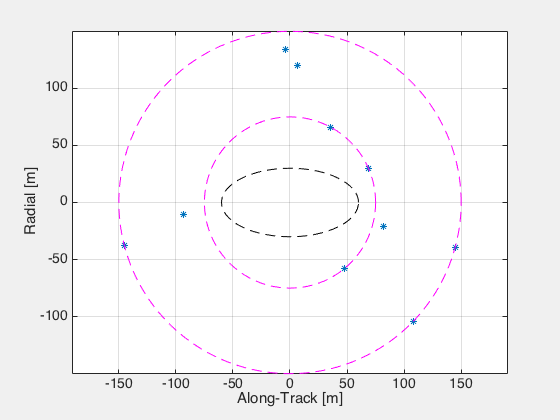 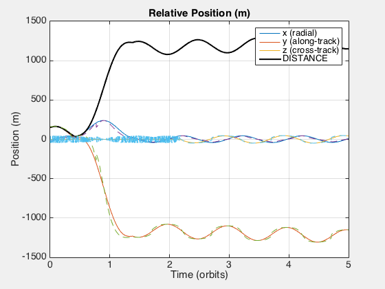 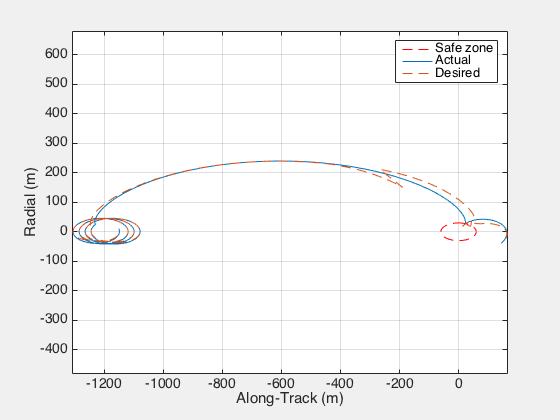 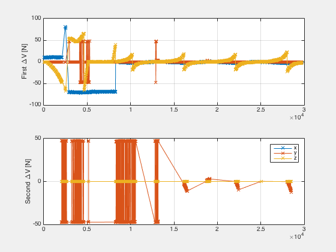 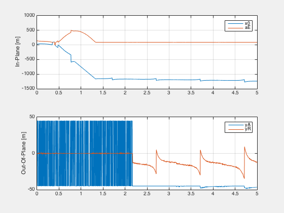 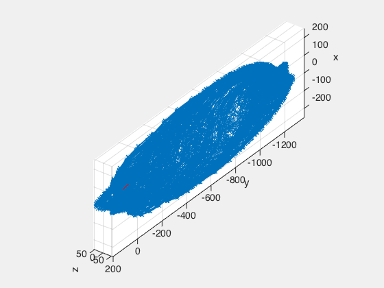
 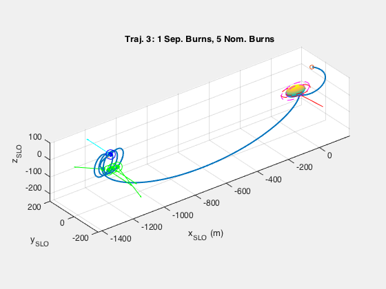 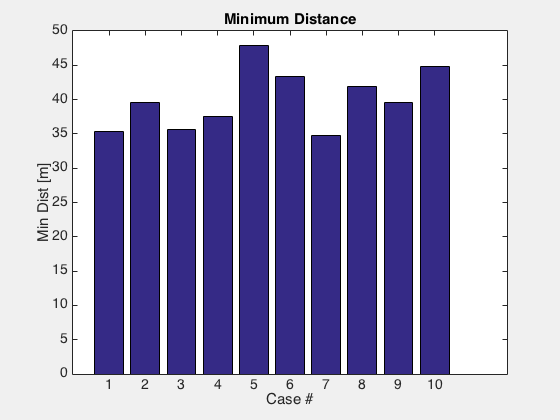 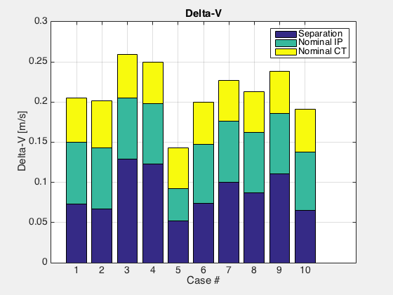 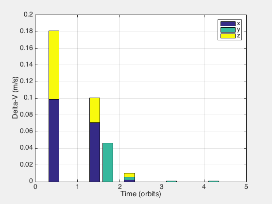 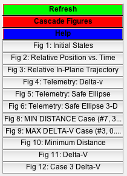
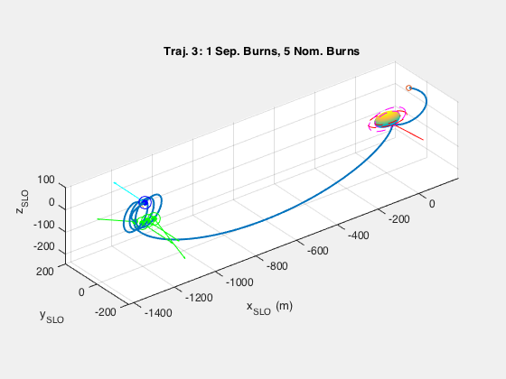 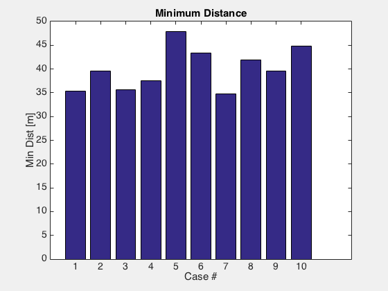 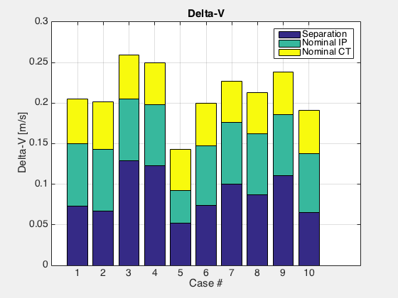 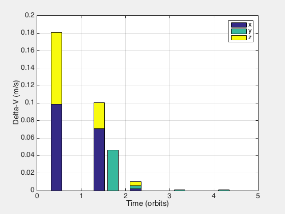 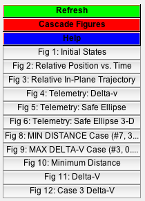